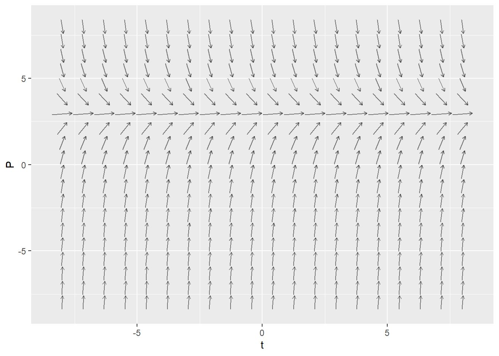
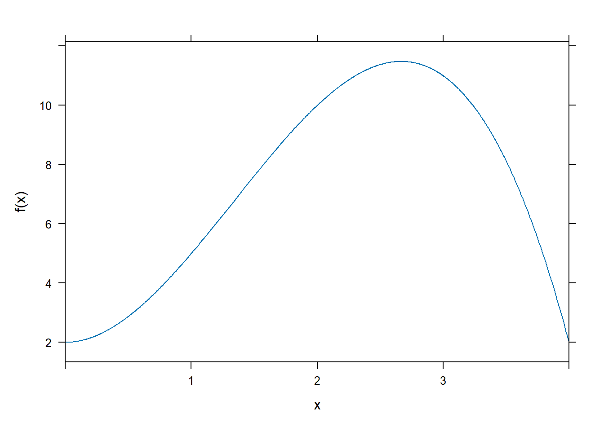
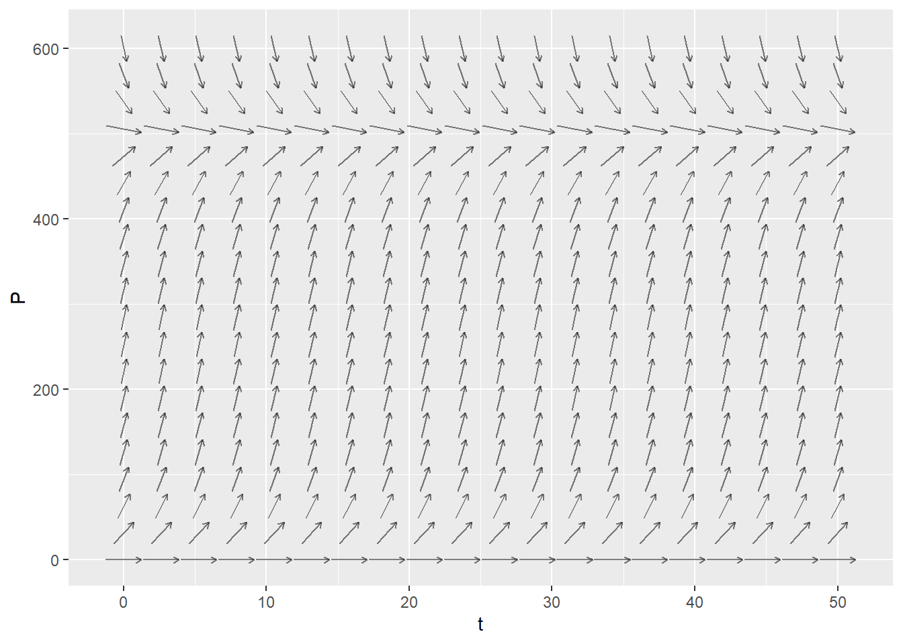

7.D Slope Fields
Creating a Slope Field in RStudio
The mosaicCalc package has a vectorfield_plot function that we use to create a slope field. So we need to make sure that this package has been loaded into RStudio.
Here is the code to create the slope field for \(\displaystyle{\frac{dP}{dt} = 6 - 2 P}\)

Activities
Match the Slope Field
Match each of the following differential equations with its slope field. Hint: start by setting \(\frac{dy}{dx} = 0\) and solving for \(y\). The slopes along the resulting curve will always be horizontal.
- \(\displaystyle{\frac{dy}{dx}=xy}\)
- \(\displaystyle{\frac{dy}{dx}=\frac{x}{y}}\)
- \(\displaystyle{\frac{dy}{dx}=x+y}\)
- \(\displaystyle{\frac{dy}{dx}=x-y}\)
| Slope Field A | Slope Field B |

|

|
| Slope Field C | Slope Field D |

|

|
Draw Some Trajectories
For each of the above slope fields, sketch the solution curves that satisfy
- \(y(0) = 1\)
- \(y(0) = 0\)
- \(y(0) = -1\)
Slope Fields for Population Models
Create a slope field for each of the following population models. For each one, describe the long-term behavior for a variety of intial populations. For which initial values of \(P\) does the population increase without bound? stabilize to a constant value? die out?
Exponential growth with harvesting. \[ \frac{dP}{dt} = 0.2 P - 40 \] for \(0 \leq P \leq 300\) and \(0 \leq t \leq 100\).
Constrained growth \[ \frac{dP}{dt} = 0.05 P (1 - 0.002 P) \] for \(0 \leq P \leq 600\) and \(0 \leq t \leq 50\).
Constrained growth with constant harvesting \[ \frac{dP}{dt} = 0.05 P (1 - 0.002 P) - 4 \] for \(0 \leq P \leq 600\) and \(0 \leq t \leq 50\).
Solutions
Match the Slope Fields
- \(\displaystyle{\frac{dy}{dx}=xy}\) is Slope Field B
- \(\displaystyle{\frac{dy}{dx}=\frac{x}{y}}\) is Slope Field A
- \(\displaystyle{\frac{dy}{dx}=x+y}\) is Slope Field D
- \(\displaystyle{\frac{dy}{dx}=x-y}\) is Slope Field C
Draw Some Trajectories
Here are some trajectories (not necessarily the ones that go through the three points specified).
| Slope Field A | Slope Field B |

|

|
| Slope Field C | Slope Field D |

|

|
Slope Fields for Population Models
Create a slope field for each of the following population models. For each one, describe the long-term behavior for a variety of intial populations. For which initial values of \(P\) does the population increase without bound? stabilize to a constant value? die out?
- Exponential growth with harvesting.

- If \(P(0) > 200\) then the population increases without bound
- If \(P(0) = 200\) then the population remains at this equilibrium value. This is an unstable equilibrium.
- If \(P(0) < 200\) then the population decreases to zero.
- Constrained growth

- If \(P(0) = 0\) then the population remains at 0. This is an unstable equilibrium.
- If \(0 < P(0) < 500\) then the population increases to the carrying capacity 500.
- If \(P(0) = 500\) then the population remains at this equilibrium value. This is a stable equilibrium, and it is the carrying capacity.
- If \(P(0) > 500\) then the population decreases down to the carrying capacity 500.
- Constrained growth with constant harvesting
Let’s set \(\frac{dP}{dt}=0\) and solve to find the equilibrium points. We have \[\begin{align} -0.0001 P^2 + 0.05 P - 4 &= 0 \\ P^2 - 500 P + 40000 &= 0 \\ (P-100)(P-400) &= 0 \end{align}\]
- If \(P(0) < 100\) then the population decreases to 0 at 0.
- If \(P(0) = 100\) then the population remains at 100. This is an unstable equilibrium.
- If \(100 < P(0) < 400\) then the population increases to 400.
- If \(P(0) = 400\) then the population remains at this equilibrium value. This is a stable equilibrium.
- If \(P(0) > 400\) then the population decreases down to 400.